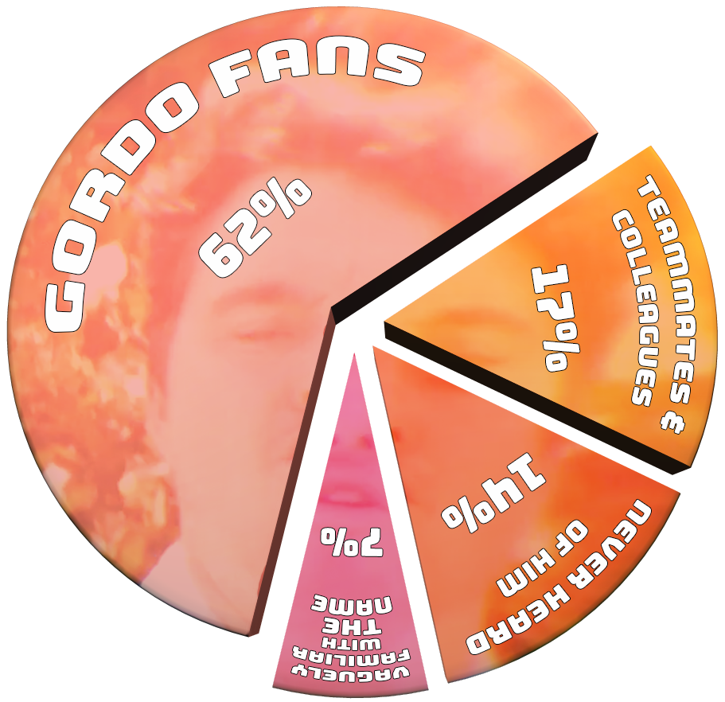
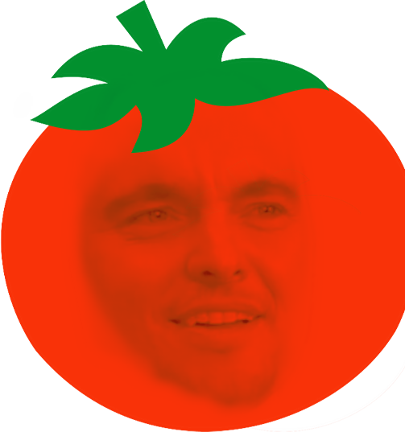
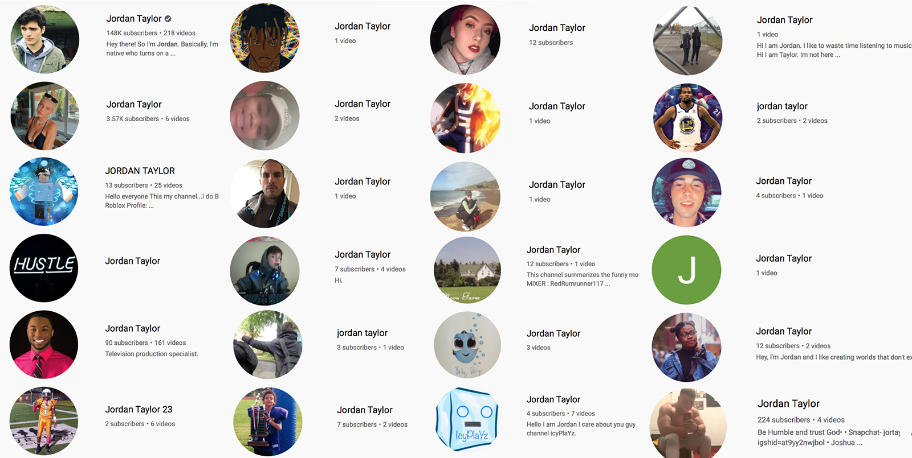

Skits. Beloved by skateboarders, 90s rappers, and middle school talent show participants alike.
Wherever there is a bunch of footage of grown folks playing on their wheelie-toys, there is frequently the inexplicable urge for those same people to try their hand at acting. When they want to be funny, they commonly aren’t. And when they try to get seriously dramatic, that’s when the real comedy begins.
Be it Stevie Williams getting killed, Rick Howard being killed, or Steve Berra getting killed, skateboarding has a long and storied legacy of video skits. Forcefully taking the baton of skate-skitdom is the WKND crew. They may not be Shortys-team-riding-around-on-horses-for-no-reason good, but they are pretty entertaining. Chief among these thespians is non-cancelled Jordan Taylor, known for his boyish charm and complete apparent lack of self-awareness.
So, as we sit and wait for the new Jordan Taylor part to drop so we can complete the data for that article (mid-March my ass!), let’s take a comedic detour.
Ladies and gentlemen, feast your eyes upon the acting skills of Gordo.
Methodology
4Ply Magazine enlisted a team of qualified (i.e. were willing to participate) reviewers to watch a pre-selected sampling of skits that feature Jordan Taylor. The critics watched all the videos Clockwork Orange style, giving a rating to each along with any comments. These ratings were averaged to create a final Score for each skit. Skits with a Score under 70% are considered ‘Rotten’ because that is how Rotten Tomatoes does it, we think.
In an effort to solicit honest commentary, all published reviews are not accredited to any specific critics.
The Critics
Our team of knowledgable skit-pundits was gathered from a varied pool consisting of Jordan’s colleagues and teammates, various skateboarding literati, 4Ply staff and well-wishers, and randos who responded to our call for participants on Instagram. Here is a breakdown of how they know of Jordan:

- Number of critics who participated: 42
- Number of reviewers that were eliminated due to obvious ‘ballot stuffing’: 3
- Number of flakes who promised to participate but didn’t: 15
The Skits
Goth Ball
- 55%
Source: Short Over Pants
Synopsis: In one of the earliest known Shorts Over Pants skits, we see whose got Goth game.
“Costumes and makeup were a 10, but lackluster acting. Not hating too much because I know this is early stuff."
“While Gordo's commitment to the role is admirable, I feel the real unsung hero is the gentleman who took the ball to the chest nearly point blank.”
“I don’t think goths drink rose, probably red wine if at all. This inaccuracy merits points off.”
“Boring.”
Cribs
- 70%
Source: Short Over Pants
Synopsis: Rapper Gordo Jizzy takes us on a tour of his property and lifestyle in an all new episode of Cribs.
“Little cringe - but we all went to high school with this guy."
“A very humbling plot. I appreciate the candidness of Gordo Jizzy's character. Sometimes even the elite of the elite deal with relationship turmoil and recycled cigarettes. We could all learn something from this.”
“Actually had no idea Gordo was this funny. Ahaha.”
Chicken Nugs
- 67%
Source: Short Over Pants
Synopsis: A shortage of chicken nuggets at the local fast foodery results in tragedy in this 15 second skit.
“I heard this was based on a true story. The person I heard it from is a compulsive liar, but regardless, it's compelling how such a compelling narrative can be told in such a compact format. A coward would have cut away before the gruesome explosion. But not them. Outstanding.”
“Loved how close the fast food place was to a cliff.”
“I've seen better.”
Professional Belt
- 82%
Source: WKND Skateboards
Synopsis: Jordan has had quite enough being taunted for being an Am, and he isn’t going to take it anymore.
“The build up was hard to watch but very necessary for the cathartic pay off.”
“Loves when the dudes are just still in the car during the fight, and when he hits Johan in the neck, his glasses go up and down.”
“Jordan was born for this role.”
McGreber vs. Wayhetter
- 65%
Source: Short Over Pants
Synopsis: McGreber describes his strategy, mindset, and secret weapon for his upcoming match against Wayhetter..
“Could have hit the gym harder to be more believable.”
“I don’t get it.”
“Love the accent and red face.”
Masculine Footwear
 - 76%
Source: New Balance Footwear
Synopsis: Jordan hits the road to look for something he can’t see.
“Not that funny but there’s clearly so much passion in the acting, voiceover, and overall production.”
"Phenomenal ad for the shoes. Thought he kinda looked like younger Bam in this but I might be tripping.”
“Just a fine quality piece of media.”
My Special Shoes
- 80%
Source: New Balance Footwear
Synopsis: Boss Jordan and his crew score big and now it's time to unload the merchandise on some skateboarding schmuck (who is actually skating waaay ahead of his time for 1989).
“It wasn’t hilarious, but very well done. The acting was actually pretty good.”
"Mr. spaghetti man really put it over the top.”
“I know Gordo isn't the first performer to portray multiple characters within the same piece. But I've yet to see anybody with half the vitality and pasta in their roles as I see here.”
The Joy Of Skating
- 81%
Source: CCS & New Balance Footwear
Synopsis: Jordan Taylor takes us on a heartwarming journey of creative expression.
“Most of Gordo's roles have been fairly intense. It's nice to see his sensitive side.”
“The way he says ‘Karangelov’ is burned in my brain forever.”
“The length of that little monologue was impressive.”
Hicks For Humanity
aka Hicks Against Hunting
- 55%
Source: Short Over Pants
Synopsis: A little promo piece to raise awareness that viddy-game killing is a viable alternative to real killing.
“If they're serious about this issue, kudos for doing it. If it's for sake of skits, not cool.”
“It's a bold move when actors decide to get political, but I think this piece pays off. The nice dog really brings it home too.”
“Not a fan.”
The Camera
- 67%
Source: New Blanance Shoes
Synopsis: A pandemic locked-down Jordan is sent a camera from his shoe sponsor to film his own commercial. You won’t believe what happens next.
“He played Gordo well in this one.”
“Solid acting. I really believed Gordo could blow up a camera.”
“Does Jordan really have a pool?”
Also:
- 6 - Number of additional skits considered for this article that were eventually deemed "too stupid".
- 4 - Hours spent trying to figure out the code to get multiple Instagram videos to embed and play properly before giving up.
- 255 - Jordan's favorite New Balance sneaker style, which is denoted by numbers because NB gets it.
- Over 400 - Number of youtube accounts by 'Jordan Taylor'.
 - 1 - Number of Justin Bieber impersonators named Jordan Taylor who go by the stage name 'Almighty J Bizzle'.
- 0 - Total combined number of free NB# sneakers, Loosey studded belts, and WKND decks given to the 4Ply staff so far.
BONUS GORDO:
Apparently, instead of filming skate tricks, Jordan went out and started a clothing brand. Check out all the fly duds from Loosey, but more importantly, check out the latest in Gordo skits from Loosey HQ:
Shout out to [and this article contains stills and videos from] Willy Jones (the other half of the Shorts Over Pants team), Grant Yansura at WKND, New Balance Shoes, and CCS. And thanks to everyone who responded to our call for participation and then watched and rated the skits.
And also Jordan.
Follow 4Ply Magazine on LinkedIn for all the latest skate-data industry gossip. We're also on Instagram.
More Gordo for your feed on his Instagram, and then brighten your day on the Short Over Pants Youtube channel.